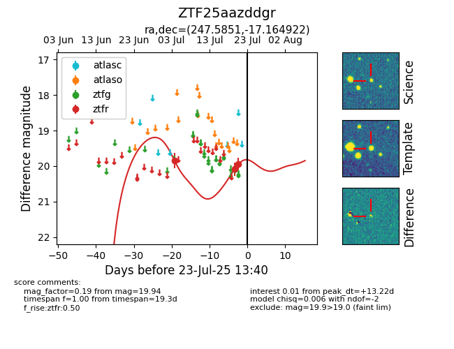

Target ZTF25aazddgr at 2025-07-23 13:40, see:
FINK: fink-portal.org/ZTF25aazddgr
Lasair: lasair-ztf.lsst.ac.uk/objects/ZTF25aazddgr
ALeRCE: alerce.online/object/ZTF25aazddgr
alt names
ZTF25aazddgr (ztf,fink)
coordinates:
equatorial (ra, dec) = (247.5851,-17.16492)
galactic (l, b) = (359.5361,+20.88529)
photometry
last ztfr=19.94
3 ztfr detections
